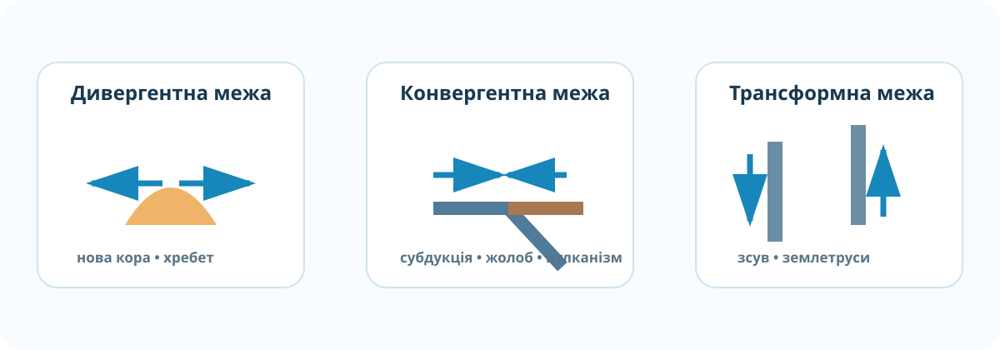
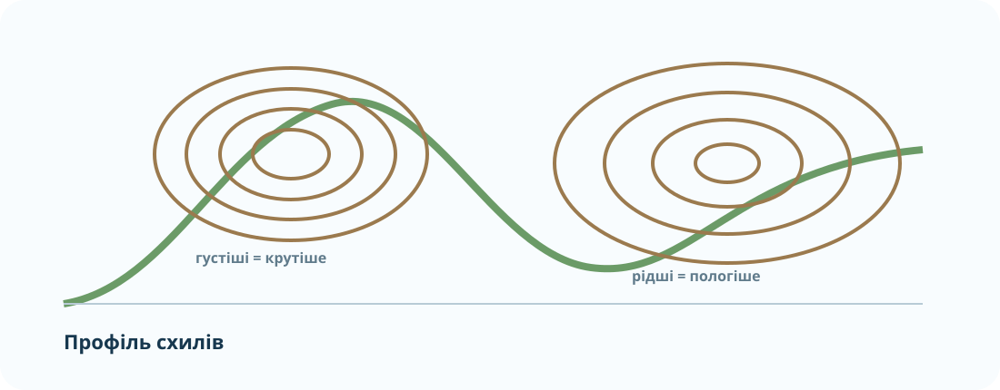

1. Вхідна діагностика: де була помилка?
Оберіть блок, у якому Ви найчастіше сумнівалися на ДТР‑2. Сторінка підкаже, на що звернути увагу, але не дасть готової відповіді.
Спочатку докази, потім правило
Порівняйте три реальні зображення. Для кожного сформулюйте: що бачу → який процес припускаю → який доказ це підтримує.


Лабораторія помилок: межі плит
Перетягування тут замінено швидким вибором: для кожної межі виберіть найкращий наслідок.

Горизонталі: не вчимо правило — доводимо його
На схемі однаковий інтервал висот. Де горизонталі зближені, там та сама зміна висоти відбувається на меншій горизонтальній відстані.

Доказове завдання. Точка A = 520 м, точка B = 280 м. Відстань між ними 1,2 км. Обчисліть відносну висоту та середній перепад на 1 км.
Мінерал чи порода? Перевіряємо склад
Ключова помилка: називати породою будь-який твердий природний матеріал або вважати граніт «одним мінералом».
Натисніть об’єкт, а потім оберіть категорію:
🎬 3 хвилини для відновлення великої картини
Подивіться коротке відео про тектоніку плит. Під час перегляду знайдіть один причинний ланцюг «рух плит → процес → форма рельєфу/небезпека».
2. Теорія після діяльності: чотири опори
3. CER: виправляємо слабку відповідь
Проблемна теза: «Гори існують просто тому, що ділянка земної поверхні висока».
4. Контроль корекції — 10 балів
Тест відкриється тільки після введення даних. Це коротка перевірка саме тих зв’язків, які найчастіше губляться після ДТР‑2.
🏠 Домашнє завдання
За результатом тесту повторіть лише ті параграфи §§14–23, які система покаже у маршруті корекції. Потім складіть один власний CER за фото будь-якої форми рельєфу.
Електронний підручник / ВШО →